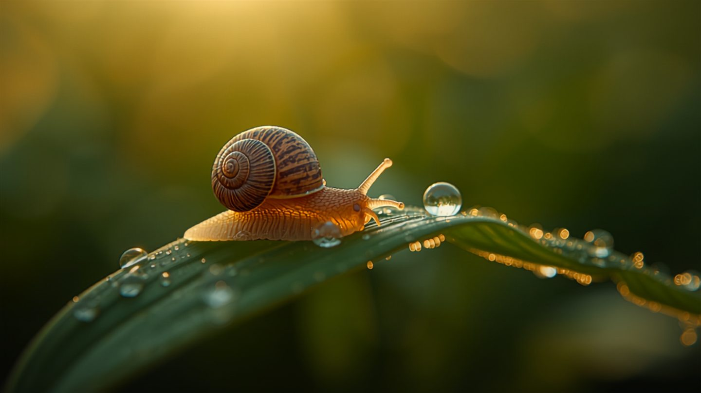
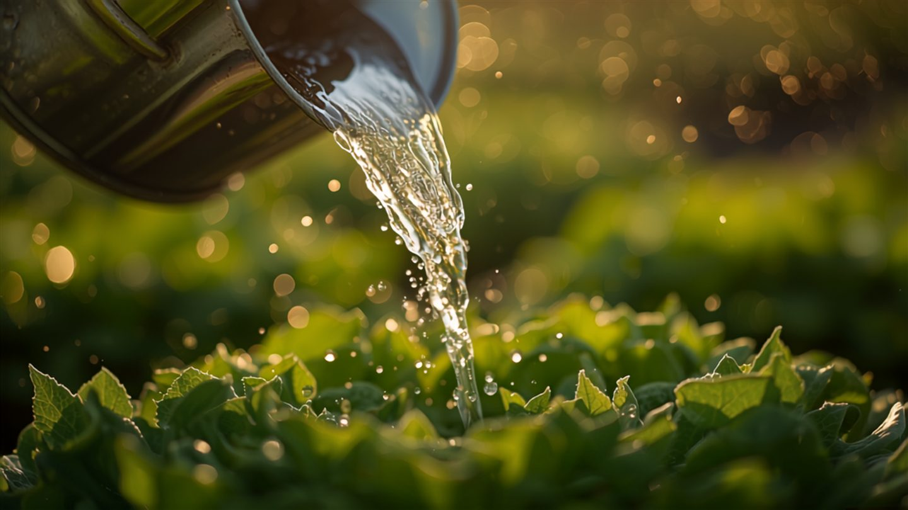

Garten-Ratgeber
Konkrete Antworten auf die Probleme, an denen Gemüsegärtner am häufigsten scheitern – ehrlich, sachlich, ohne Beschwichtigung.

Gemüse-Pflanzkalender: Was du in welchem Monat säen und pflanzen kannst
Die Übersicht für jedes Gemüse – Vorziehen, Aussaat, Ernte – plus drei Faustregeln fürs Gartenjahr.

Mischkultur: welche Beet-Nachbarn sich vertragen – und welche nicht
Die Nachbarn-Tabelle plus die vier echten Gründe, warum Mischkultur funktioniert – und was nur Aberglaube ist.

pH-Wert im Gemüsebeet messen und anpassen – die Anleitung
Warum gedüngte Pflanzen trotzdem hungern, welcher pH-Wert für welches Gemüse stimmt und wie du ihn korrigierst.

Tomaten gehen trotz richtiger Pflege ein – die 6 häufigsten Ursachen
Von Braunfäule bis pH-Wert: jedes Symptom, seine Ursache und die passende Sofortmaßnahme.

Schneckenschutz im Gemüsebeet – was wirklich hilft und was nur Mythos ist
Schneckenkorn, Nematoden, Kragen – und warum Eierschalen, Kaffeesatz und Kupferband enttäuschen.

Bewässerung automatisieren im Urlaub – 5 Lösungen im Vergleich
Tropfschlauch, smarte Systeme, Olla-Tontöpfe, Flaschenaufsätze und der Nachbar – ehrlich verglichen.

Hochbeet richtig schichten – der Aufbau von unten nach oben
Die vier Schichten, warum sie funktionieren, wie viel Erde du wirklich brauchst und warum es jedes Jahr sackt.

Fruchtfolge im Gemüsebeet – der einfache 4-Jahres-Plan
Starkzehrer, Mittelzehrer, Schwachzehrer und Gründüngung im Wechsel – damit der Boden nicht müde wird.

Kompost richtig anlegen – was reinkommt, was nicht und wann er fertig ist
Das Verhältnis von Grün zu Braun, die Ja-Nein-Liste und der Fertig-Test – ohne Gestank, ohne jahrelanges Warten.